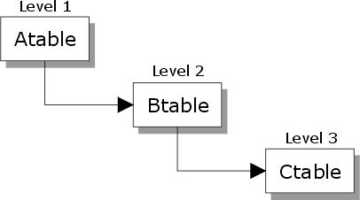

What is a Set?
Alpha Five uses a conceptual model called a set to describe a system of tables and their relationships to each other. A set is a combination of lined tables. Once defined, you can use a set as if it were a single table; you can view data in the set, enter new data, or use it to design a report.
Sets enable you to:
Perform multi-table data entry : You can view, enter, and change related records from any table in the set using a single data entry form.
Perform multi-table reporting : You can define reports that group and summarize related records from several of the set's tables.
Create streamlined databases and applications : You will rarely want to design applications that store the same data in more than one place.
Define and run queries that select and sort records based on criteria (data) from multiple tables.
 Note : Alpha Five provides
lookup functions that you can use to retrieve values in external tables
and databases. However, establishing links using a set gives you more
flexibility.
Note : Alpha Five provides
lookup functions that you can use to retrieve values in external tables
and databases. However, establishing links using a set gives you more
flexibility.
Reading Data from a Set
A table contains data. A set is a relationship between tables, but does it itself contain data. A set selects and organizes records from two or more tables. It allows you to fetch (read) composite records. However, you must use the tables of the set to read the data in these fields. For example, set Dset is composed of records Atable, Btable, and Ctable.

Suppose you want to read field Efield in table Ctable. The syntax would be:
|
dim set_pointer as P dim c_table_pointer as P set_pointer = set.open("Dset") c_table_pointer = set_pointer.Ctable set_pointer.fetch_next(3) ' level 3 corresponds to Ctable field_E_data = c_table_pointer.Efield |
See Also